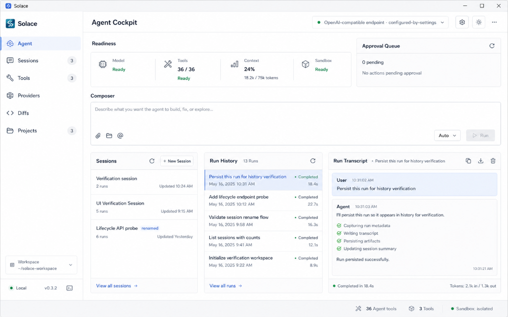

SOLACE
An autonomous agent coordinator, tool sandbox executor, and live terminal cockpit. Designed for capability-safe AI software engineering, built entirely in the Ricochet postfix programming language.
The Agent Cockpit
Click on the glowing hotspots on the dashboard to inspect the architectural modules of the Solace agent execution environment.

Select a Hotspot
Click any of the glowing cyan points on the dashboard browser mockup above to learn how Solace manages sessions, sandboxes, human approvals, and agent transcripts using the Ricochet runtime.
Engineered for Safe Autonomy
Dynamic Orchestration
Solace runs multiple asynchronous agent execution loops coordinated via Ricochet’s object model. Class-based message passing coordinates planning, thinking, and executing steps.
Capability Sandboxing
By leveraging Ricochet’s capability-first design, agents only have the powers explicitly granted. Destructive side-effects like file writes are isolated and checked at the bytecode boundary.
Stack-Aware Debugging
Unlike opaque Python agent scripts, Solace utilizes Ricochet's VM metadata. Inspect precise execution paths, stack frames, and variables in real-time if an agent gets stuck in a loop.
Developer Cockpit
A premium interface featuring active session lists, tool mappings, diff viewports, and detailed live run transcripts. Solace tracks LLM token usage and execution times out of the box.
The Power of Concatenative Architecture
Writing an agent harness in a stack-based language might seem unconventional, but it yields extraordinary structural clarity. Because every operation resolves on a data stack, agent state manipulation becomes highly transparent.
-
Compact Runtime Signature
The Ricochet bytecode VM runs with negligible memory overhead compared to typical heavy Node or Python environments.
-
No Side-Effect Pollution
VM tasks run with isolated runtime stacks, making context leakage or unintended side effects structurally impossible.
-
Extremely Fast Dispatch
Dynamic OOP methods resolve quickly through the bytecode compiler, maintaining responsive agent coordination.
(( Solace Agent Loop in Ricochet ))
Agent Object subclass
llm_client field
memory field
tools field
end
(( Executes a single reasoning cycle ))
( prompt -> response ) run_step method
prompt var
prompt set
(( Retrieve history from memory ))
self .memory get .get_history call
history var
history set
(( Run LLM prompt completions ))
history get prompt get
self .tools get self .llm_client get
.complete call response var
response set
(( Inspect and execute tool calls ))
response get .tool_calls get empty? not if
response get .tool_calls get each: ( tool_call )
tool_call var
tool_call set
self .tools get tool_call get .execute call
result var
result set
self .memory get tool_call get result get
.add_tool_result! drop
end
(( Re-run next step recursively ))
"Proceed" self .run_step call
else
response get .content get
end
end